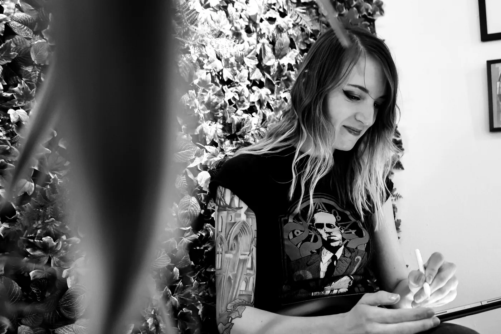
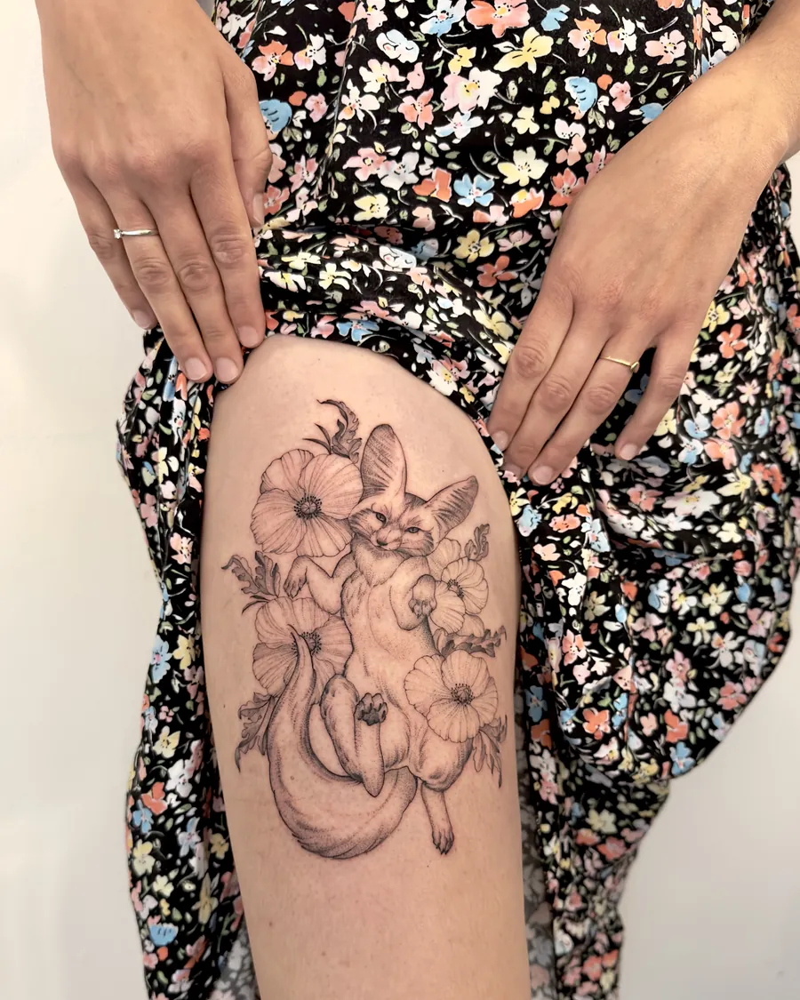
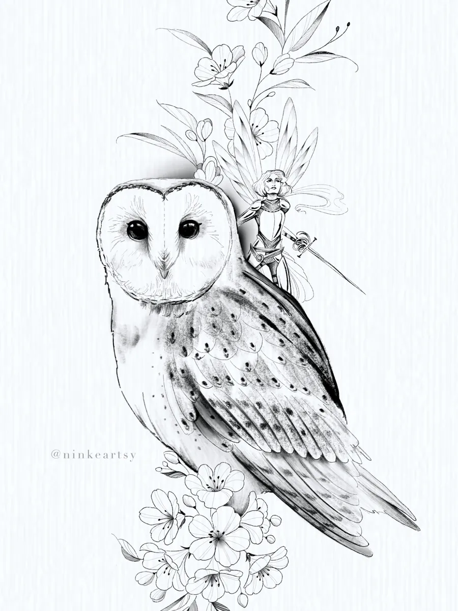

01
Stuur je idee naar Ninke
Ninke
Natuur · fantasy · fijne lijnen
Van speels en dromerig tot melancholisch, met een tikje donker. Ninke neemt de tijd voor elk idee, en na jaren in shops en op conventies in binnen- en buitenland voel je je bij haar meteen op je gemak.

